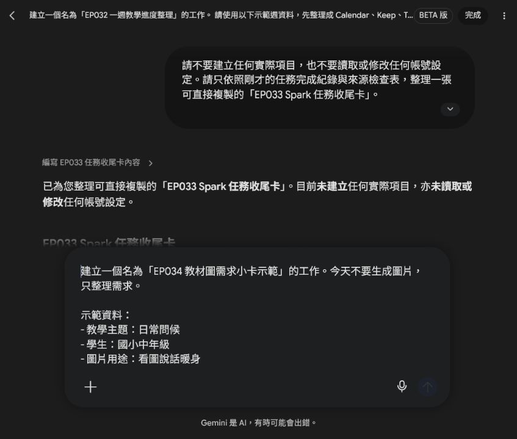
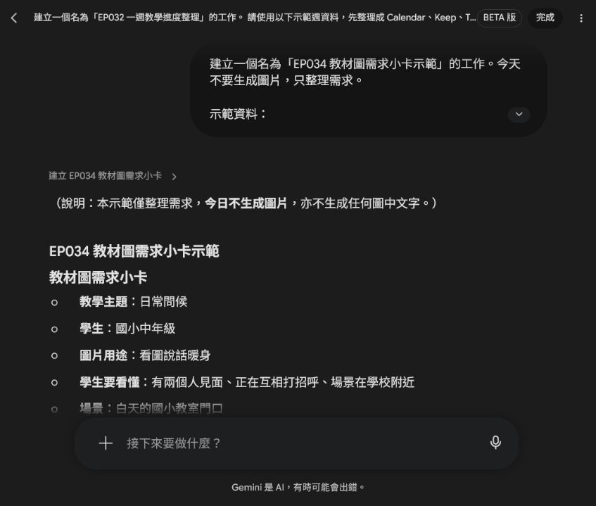
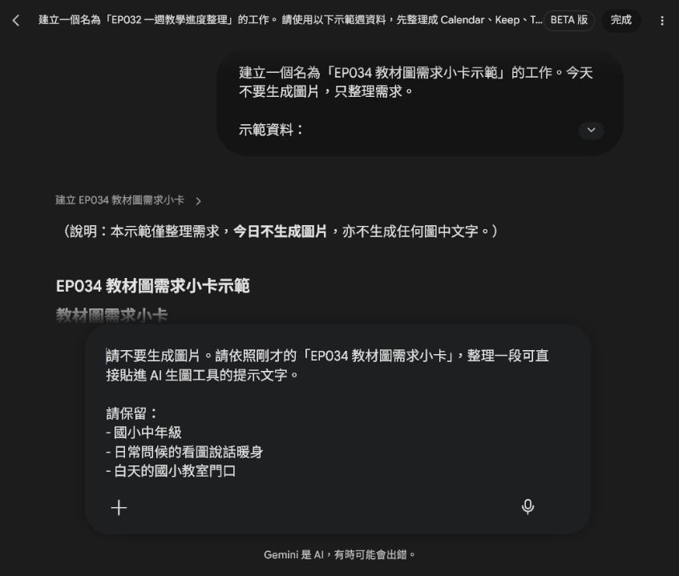
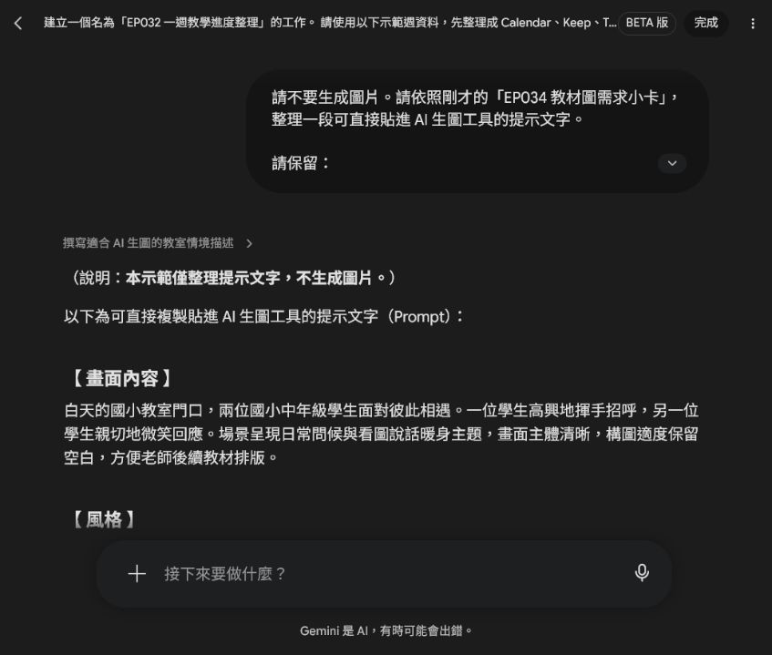
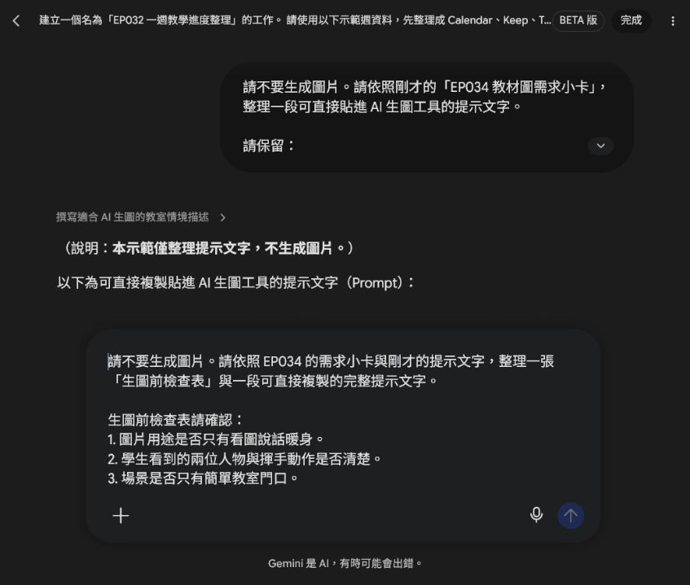
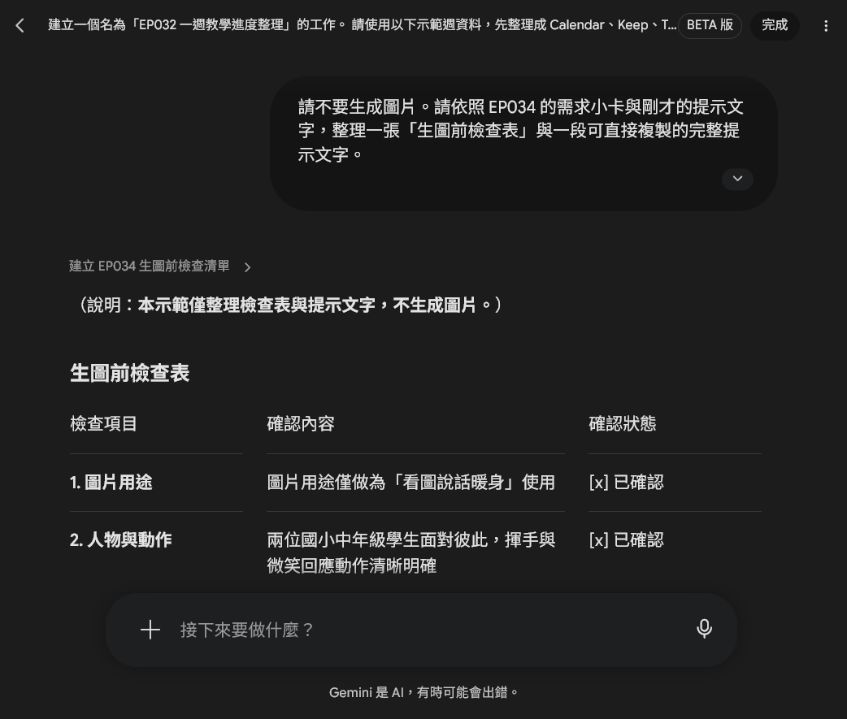

EP034｜生圖前，先寫好教材圖需求
今天只做一件事
這一集先不要急著叫 AI 畫圖。
我們先花幾分鐘，把「這張圖片到底要拿來教什麼」寫清楚。
完成後，你會得到：
一張教材圖需求小卡 ＋ 一段可以直接貼進 AI 生圖工具的提示文字。
為什麼要先做這一步？
如果只跟 AI 說：
「幫我畫一張族語教材圖。」
AI 可能會畫得很漂亮，但你上課時才發現：
- 不知道要拿來教什麼
- 畫面東西太多
- 學生不知道要看哪裡
- 圖片裡出現亂碼文字
- 沒有地方可以放自己的教材文字
所以我們先告訴 AI：
誰要看？要練什麼？畫什麼？不要畫什麼？
今天的示範
先不要做整套教材，只選一個很小的課堂活動。
| 要決定的事情 | 今天的示範 |
|---|---|
| 教學主題 | 日常問候 |
| 學生 | 國小中年級 |
| 圖片用途 | 看圖說話暖身 |
| 場景 | 教室門口 |
| 不要出現 | 文字、校名、Logo、學生個資 |
接下來跟著做。

STEP 1｜先決定「這張圖拿來做什麼」
先完成這一句：
我要用這張圖，讓學生練習＿＿＿＿＿＿。
今天的例子：
我要用這張圖，讓學生練習日常問候。
小提醒
先選一件事情就好。
不要一次要求：
「又要教問候、又要教單字、又要教文化、又要當學習單背景。」
圖片的任務越單純，通常越好用。
STEP 2｜學生看完圖片，要看懂什麼？
想像你把圖片投影出來。
學生看 10 秒後，希望他能發現什麼？
今天我們希望學生看懂：
□ 有兩個人見面
□ 他們正在打招呼
□ 地點是在學校附近
不用寫很多，2～3 件事情就夠了。
換你填：
□ ____________________
□ ____________________
□ ____________________
STEP 3｜決定一個簡單場景
接著決定：
事情發生在哪裡？
例如：
- 教室門口
- 校園走廊
- 操場旁
- 家裡客廳
- 商店
- 公車站
今天使用：
教室門口。
Spark 整理出的需求小卡會把用途、人物、場景和排除項目放在一起。先確認這張卡，再繼續寫提示文字。

初學者技巧
如果 AI 畫得很亂，通常不是要寫更多，而是要把場景縮小。
例如：
❌ 一整間熱鬧的學校
改成：
✅ 教室門口
STEP 4｜寫出「不要出現什麼」
教材圖片有一些東西最好先排除。
今天我們寫：
□ 不要文字
□ 不要校名
□ 不要 Logo
□ 不要水印
□ 不要學生個資
□ 不要太複雜的背景
為什麼特別要求「不要文字」？
因為 AI 生成圖片裡的文字常常會拼錯、變形或出現亂碼。
比較穩的方法是：
先生成沒有文字的圖片，教材文字之後再自己排版。
STEP 5｜完成你的「教材圖需求小卡」
把前面四步整理起來。
我的教材圖需求小卡
教學主題：
學生：
圖片用途：
學生要看懂：
- ---
- ---
- ---
場景：
不要出現：
做到這裡，其實你已經完成最重要的部分了。
接下來只是把它交給 AI。
STEP 6｜把小卡變成 AI 提示文字
你可以使用下面這個格式。
可複製提示文字
下面這段是把需求小卡轉成生圖工具看得懂的提示文字。這一步仍然只是整理文字，還沒有生成圖片。

請生成一張適合課堂使用的教材插圖。
圖片用途：
給＿＿＿＿＿＿學生進行＿＿＿＿＿＿活動。
學生看圖後要能看懂：
- ＿＿＿＿＿＿
- ＿＿＿＿＿＿
- ＿＿＿＿＿＿
畫面內容：
場景位於＿＿＿＿＿＿。
畫面中有＿＿＿＿＿＿。
人物正在＿＿＿＿＿＿。
風格：
溫暖、清楚、畫面簡單，適合放進教材。
限制：
- 圖片中不要出現任何文字。
- 不要出現真實校名、Logo、水印或學生個資。
- 人物表情自然。
- 背景不要太複雜。
- 保留部分空白，方便之後加入教材文字。
今天示範的完成版
請生成一張適合國小課堂使用的教材插圖。
圖片用途：
給國小中年級學生進行「日常問候」的看圖說話暖身活動。
學生看圖後要能看懂：
- 有兩個人見面。
- 兩個人正在互相打招呼。
- 場景是在學校附近。
畫面內容：
白天的國小教室門口，兩位學生遇見彼此。
一位學生自然地揮手，另一位學生微笑回應。
背景只需要簡單的教室門、窗戶與書包，不要放太多物品。
風格：
溫暖、清楚、畫面簡單，適合放進國小教材。
限制：
- 圖片中不要出現任何文字。
- 不要出現真實校名、Logo、水印或學生個資。
- 人物表情自然，不要過度誇張。
- 背景不要太複雜。
- 保留上方或側邊空白，方便老師之後加入教材文字。
Spark 整理後的版本會把內容分成「畫面內容、風格、限制」，方便老師複製到真正的生圖工具。

STEP 7｜圖片出來後，先不要看漂不漂亮
在真正生成圖片前，先用下面的檢查表再看一次需求。這能避免提示文字寫得很完整，卻漏掉圖片用途或排版留白。

先檢查三件事。
① 我知道要看哪裡嗎？
✅ 一眼就看到兩個人在打招呼
❌ 背景人物太多，不知道誰是主角
② 場景看得懂嗎？
✅ 看得出是在教室或校園附近
❌ 背景太複雜，看不出地點
③ 可以拿來做教材嗎？
✅ 沒有亂碼文字，而且有地方可以加題目
❌ 圖片塞得滿滿的，沒有地方排版
三題都可以回答「可以」，這張圖才算適合繼續使用。

圖片不理想怎麼辦？
先不要整段提示文字重寫。
一次只改一個地方。
畫面太亂
原本：
「國小校園」
改成：
「教室門口，背景簡單」
學生不知道要看哪裡
把人物動作寫清楚。
例如：
「一位學生揮手，另一位學生看著對方微笑回應。」
圖片很像宣傳海報
加入：
「教材插圖、構圖簡單、背景簡潔、保留留白。」
圖片出現亂碼文字
不要要求 AI：
「把上面的文字改正。」
直接重新生成：
「圖片中不要出現任何文字。」
通常會比較穩。
STEP 8｜拿進課堂試一次
例如把這張圖放在課堂開始的前 5 分鐘。
先讓學生看圖 10 秒。
接著問：
「你看到誰？」
「他們在做什麼？」
「他們可能要說什麼？」
最後再帶入今天真正要學習的族語詞句。
這樣圖片就不只是裝飾，而是幫學生進入今天的學習情境。
完成前最後檢查
□ 我知道這張圖片要拿來教什麼。
□ 我只安排一個主要學習任務。
□ 學生知道圖片要看哪裡。
□ 圖片沒有文字、校名、Logo 或個資。
□ 圖片有留白，可以繼續排版。
□ 我有保存最後使用的提示文字。
完成以上項目，你的第一張「教材圖需求小卡」就完成了。
今天記住一句話就好
先決定學生要學什麼，再決定 AI 要畫什麼。